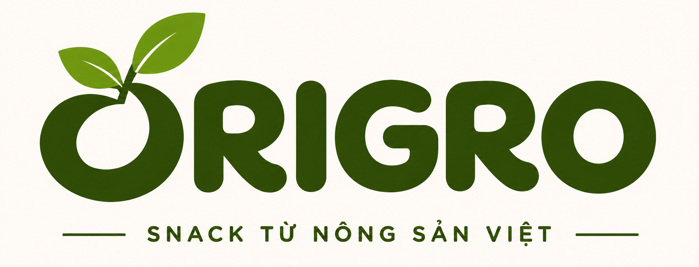
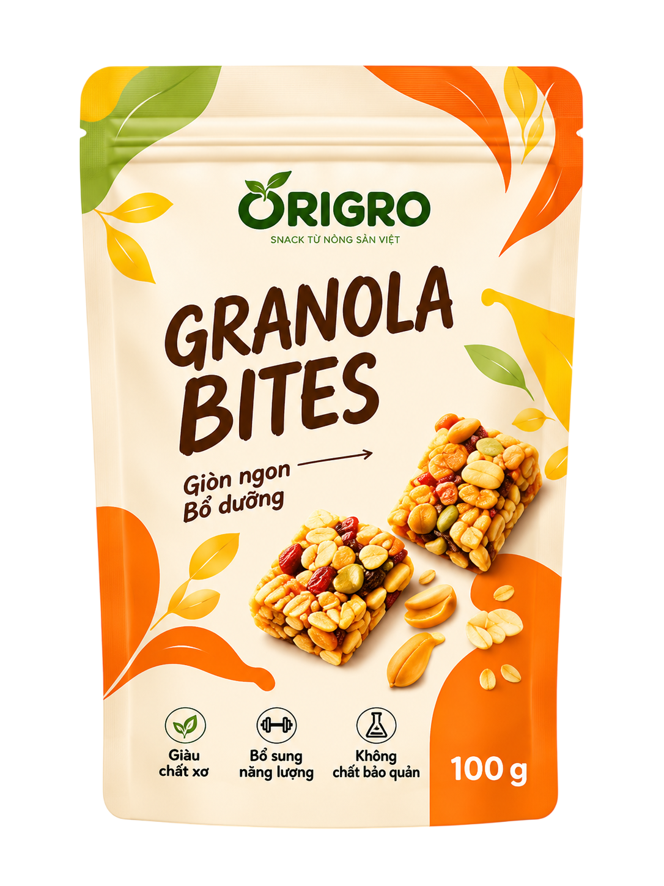
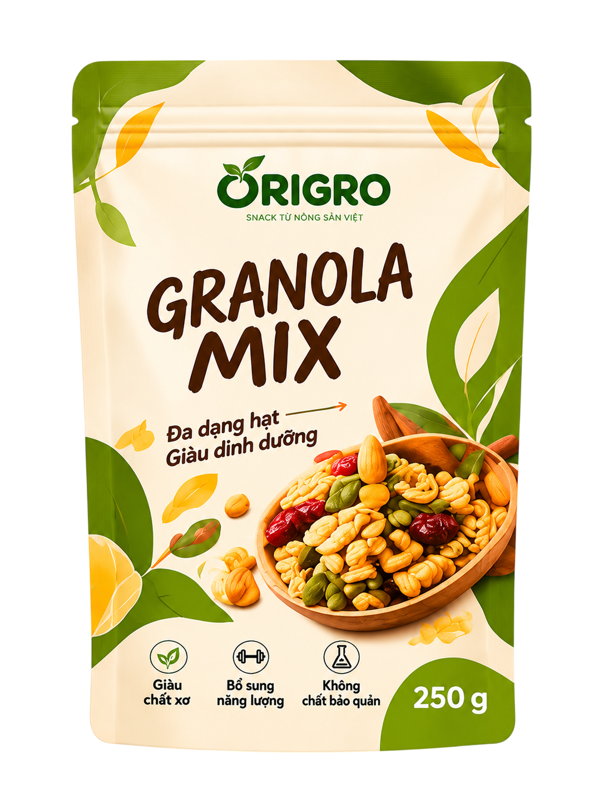
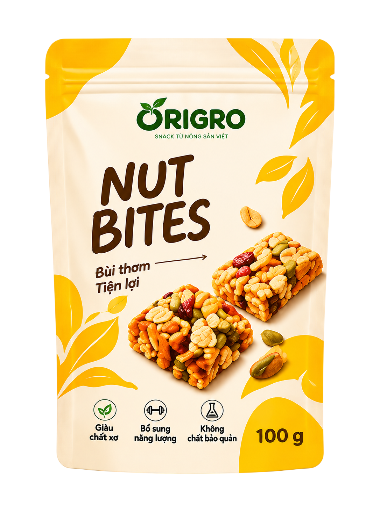
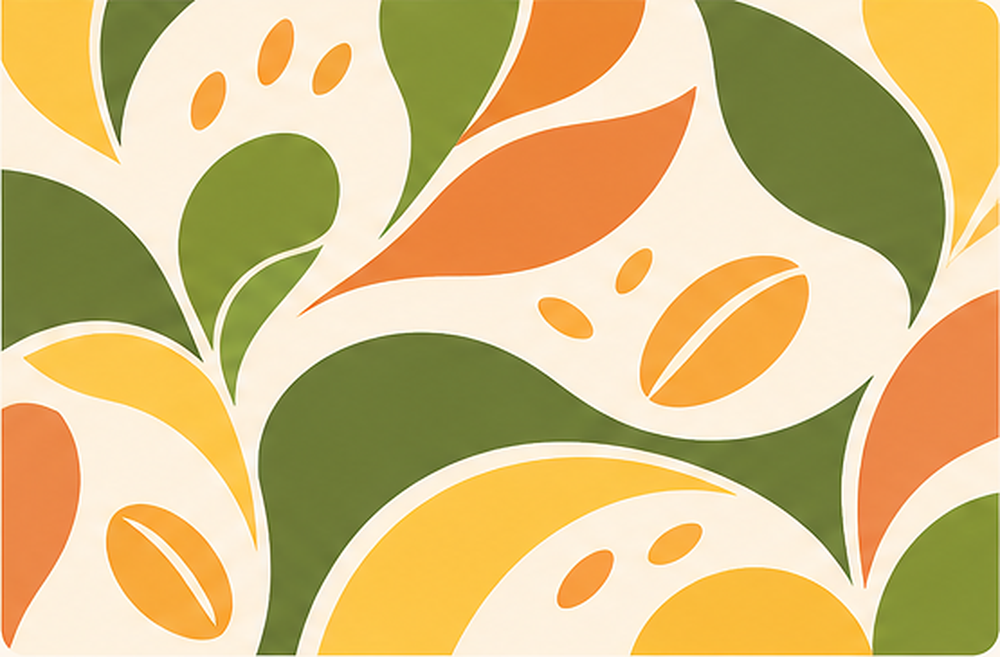

01 · BÁNH NGŨ CỐC
Granola Bites
Bánh ngũ cốc dạng miếng nhỏ, kết hợp yến mạch, hạt và trái cây sấy. Gọn nhẹ cho giờ học và làm việc.
100g · Quy cách đề xuất39.000đ

Khám phá ngay ↗Ăn nhẹ tiện lợi, rõ thành phần, an tâm lựa chọn mỗi ngày. Khám phá những sản phẩm từ ngũ cốc và các loại hạt cùng ORIGRO.



ORIGRO được tạo nên từ Origin (nguồn gốc) và Grow (phát triển). Chúng tớ mong muốn kết nối giá trị nông sản địa phương với những trải nghiệm ăn nhẹ hiện đại.
Không chỉ là món ăn giữa giờ, mỗi sản phẩm là một lựa chọn tiện lợi, với định hướng minh bạch thông tin nguyên liệu để bạn dễ dàng tìm hiểu.
Khám phá giá trị ORIGRO ↗Ba hình thức ăn nhẹ từ ngũ cốc và hạt, dành cho những khoảnh khắc khác nhau trong ngày.
Bánh ngũ cốc dạng miếng nhỏ, kết hợp yến mạch, hạt và trái cây sấy. Gọn nhẹ cho giờ học và làm việc.
Ngũ cốc, các loại hạt và trái cây sấy. Dùng trực tiếp hoặc kết hợp cùng sữa chua, sữa tươi.
Bánh hạt dạng miếng nhỏ, kết hợp các loại hạt được tuyển chọn. Một lựa chọn cho giờ nghỉ giữa ngày.
* Giá và quy cách trong dự án là đề xuất của nhóm. Hình ảnh bao bì là mockup thiết kế, không phải sản phẩm đã được thương mại hóa. Khối lượng hiển thị trên một số mockup có thể khác quy cách đề xuất.
Thiết kế dạng túi dễ mang theo, phù hợp những ngày bận rộn.
Ba dòng sản phẩm với nhiều cách sử dụng và thưởng thức.
Định hướng khai thác nông sản Việt và công khai xuất xứ khi được xác minh.
Hướng đến cung cấp thông tin thành phần rõ ràng, dễ tiếp cận.
Một chút Granola Bites giữa giờ, một bát Granola Mix cho bữa sáng, hay Nut Bites mang theo trên đường. ORIGRO hướng đến những lựa chọn ăn nhẹ gần gũi trong cuộc sống hiện đại.
Nhận thông tin sản phẩm ↗
Đăng ký để nhận thông tin về ba dòng sản phẩm, cập nhật hoạt động và các chương trình giới thiệu sản phẩm khi có.
Điền thông tin bên dưới để kết nối với ORIGRO.
Bản xem trước. Quản trị viên cần kết nối HubSpot để form nhận dữ liệu thật.